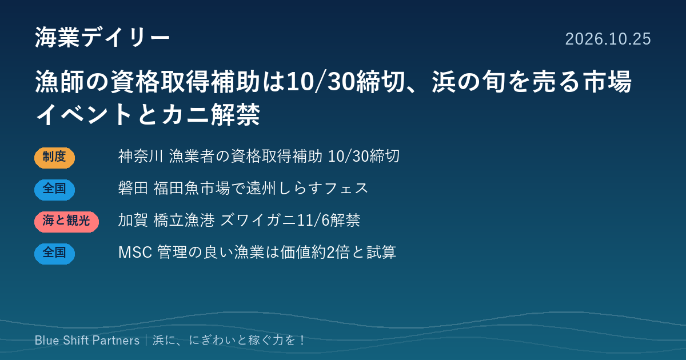

2026.10.25
漁師の資格取得補助は10/30締切、浜の旬を売る市場イベントとカニ解禁

神奈川県の漁業者向け資格取得支援補助金が10月30日に申請期限を迎えます。静岡・磐田の魚市場では本日しらすフェスが開かれ、石川・加賀では11月6日のズワイガニ漁解禁に向けた発信が始まりました。資源管理の価値を財務の言葉で示すMSCの試みもあわせて紹介します。
神奈川県、新規漁業者の資格取得を補助 申請は10月30日まで
神奈川県は令和8年度の「漁業就業・定着化のための資格取得支援補助金」の申請を10月30日（金）必着で受け付けています。対象は県内で漁業に就いて3年以内の方で、小型船舶操縦士、中型自動車運転免許、フォークリフト、移動式クレーン、海上特殊無線技士、玉掛け、潜水士などの取得費用の3分の1以内（1件上限5万円）を補助します。申請は就業地の漁業協同組合を通じて行い、取得後は県内で3年以上漁業を続けることが条件です。予算に達した時点で受付を終了します。
ここがポイント：若手の定着は浜の人材確保の土台です。漁協にとっては、新しく入った漁業者に締切前の申請を声かけできる、すぐ使える制度です。
出典：神奈川県 環境農政局 水産課「漁業就業・定着化のための資格取得支援補助金」（2026-05-21）
磐田・福田魚市場で「遠州しらすフェス2026」 漁協が事務局の浜のにぎわいづくり
静岡県磐田市の福田魚市場で、10月25日（日）10時から15時まで「第２回 遠州しらすフェス2026」が開かれます。主催は遠州しらすフェス実行委員会で、遠州漁業協同組合などが事務局を務め、入場は無料です。生しらす・釜揚げしらすの直売、地元飲食店がしらす料理を競うグルメグランプリ、ステージや子ども向けの催しが予定されています。磐田市によると、前回は3000人以上が来場しました。
ここがポイント：魚市場を会場に、漁協・市・地元飲食店が一緒に浜の旬を売る形は、漁港を「にぎわいの場」として使う海業の身近な実例です。直売の実績を次回の企画や販路づくりに生かせます。
出典：磐田市（PR TIMES）「第２回 遠州しらすフェス2026」10月25日開催（2026-10-22）
加賀・橋立漁港、11月6日のズワイガニ漁解禁を観光に発信
加賀市観光交流機構は、11月6日のズワイガニ漁解禁に合わせて橋立漁港の魅力を発信しています。雄の加能ガニは翌年3月20日まで、雌の香箱ガニは資源保護のため12月29日までが漁期です。橋立漁港では競りを夕方に行い、港名と船名を記したタグを付けて、鮮度を保ったまま地元の旅館や料理店に届けているとしています。
ここがポイント：「どの港の、どの船のカニか」を示すタグや夕方の競りは、漁港そのものを観光の物語にする工夫です。旬の解禁日を地域ぐるみで発信する点は、ほかの浜でもまねできます。
出典：加賀市観光交流機構（PR TIMES）「11月6日 ズワイガニ漁解禁！！競り声響く橋立漁港」（2026-10-22）
MSC、資源管理の良い漁業は価値が約2倍とする「漁業フィナンシャル・モデル」を発表
MSCジャパンは、金融機関が水産業のリスクと強さを理解するための試作の「漁業フィナンシャル・モデル」を発表しました。割引キャッシュフロー法で試算した結果、適切に管理されたMSC認証漁業の価値は、管理が不十分な同様の漁業の約2倍（2.05倍）になる可能性があるとしています。差の大半は、漁獲の安定と市場へのアクセス改善による利益率の向上によるものと説明しています。
ここがポイント：資源管理の取り組みを「数字」で示せれば、漁協や浜の事業者が金融機関と話す材料になります。浜の稼ぐ力を融資や投資につなげる視点として注目です。
出典：MSCジャパン（PR TIMES）「漁業フィナンシャル・モデル」が示す適切に管理された漁業の価値は約2倍（2026-10-22）
補助金、市場のイベント、解禁日の発信、資源管理の価値づけと、今日の話題は形こそ違いますが、どれも「浜の人と魚を、きちんと価値に変える」取り組みです。締切や旬の日付を地域で共有し、早めに動けるかどうかが稼ぐ力の差になります。